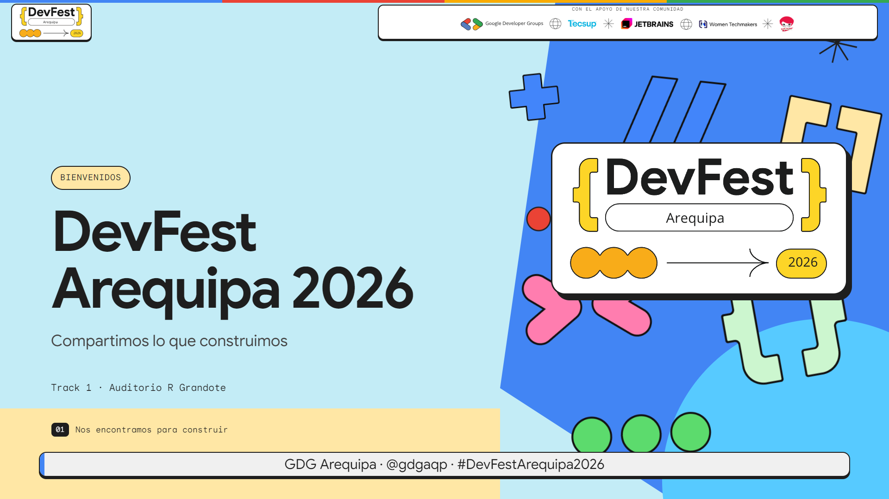
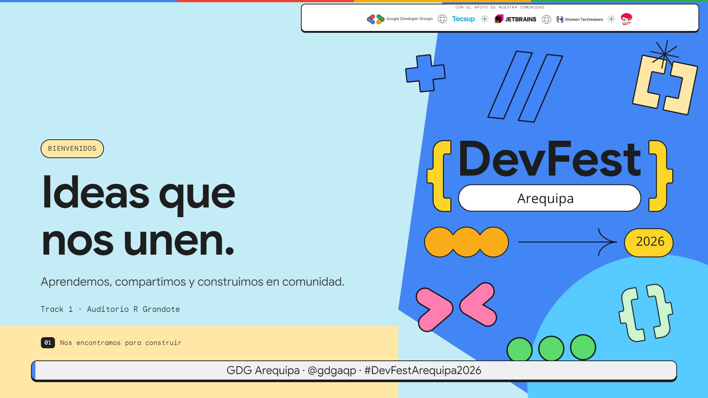
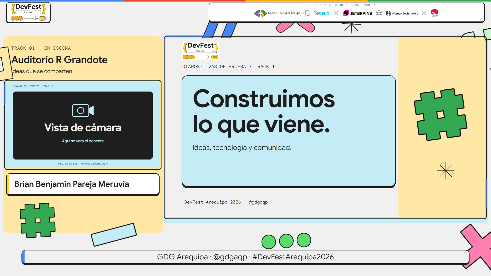
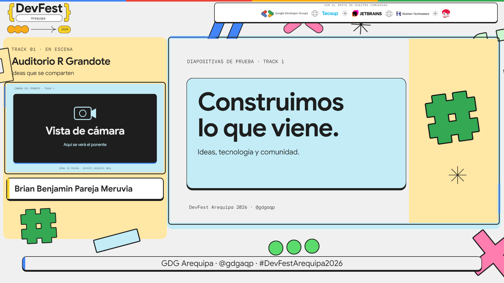
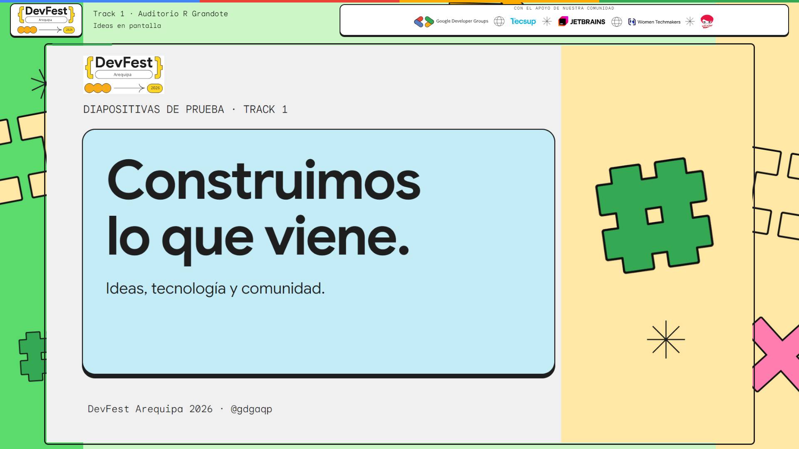
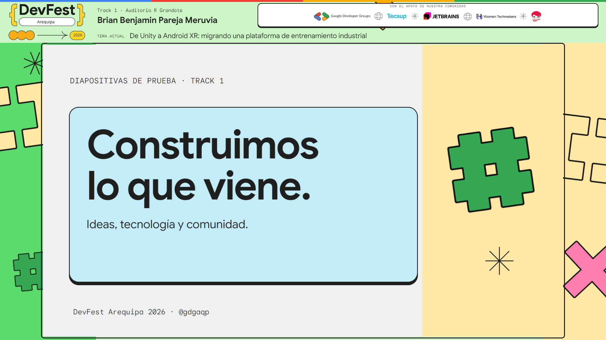
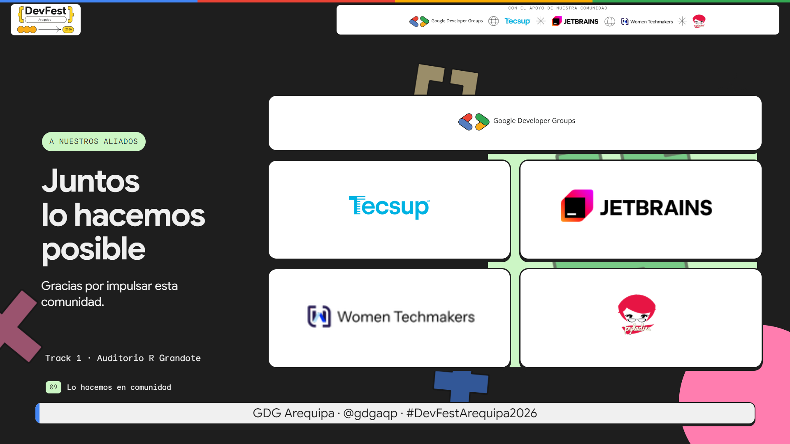
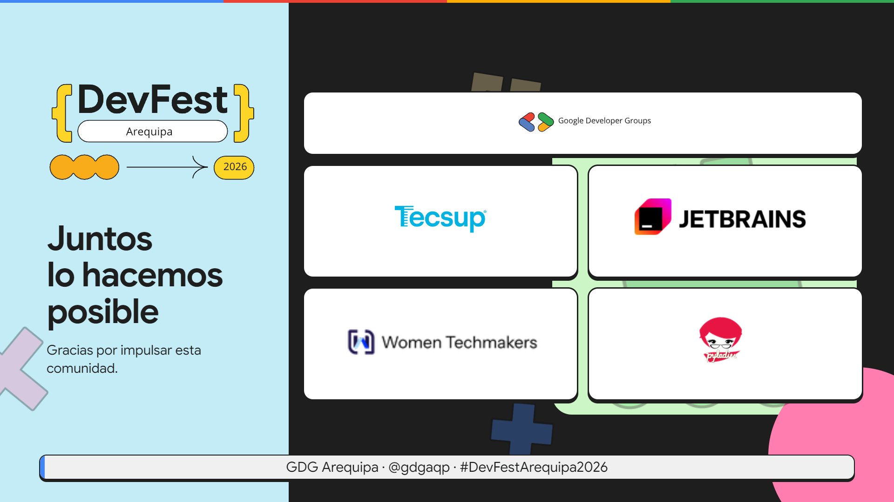

Una identidad clara, con espacio para cada elemento
El logo local tiene más presencia. La cámara, las diapositivas y la información de la charla conservan su propio espacio.
Bienvenida: un solo logo principal
Antes
Ahora
Escena mixta: marca más visible e integrada
Antes
Ahora
Diapositivas completas: nombre y tema actual
Antes
Ahora
Aliados: sin repetir la franja superior
Antes
Ahora